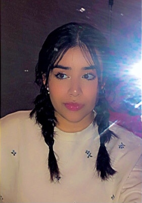
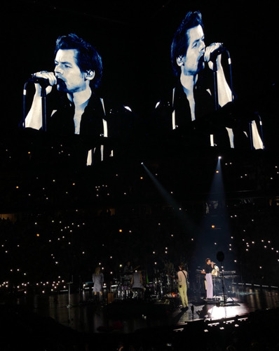
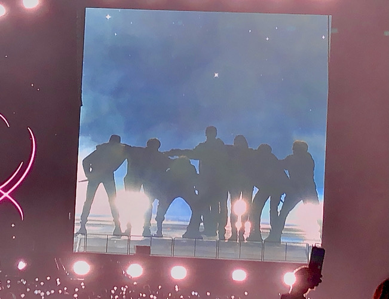

Who Am I?
Hello! My name is Alexia. Im currently a sophmore in Columbia College Chicago. Im doing this website for fun so I hope you enjoy your time here. In this blog I will post random pictures and anything thats on my mind. Dont take anything you see on here too serious. Its all just for fun.
Current Fav Artist

I was a 1D fan since middle and got to see Harry Styles in concert in September. This was actually my second time seeing him. The concert was a blast! This picture is from the concert while he's performing "Sign of the Times." FYI I didnt even have tickets for the concert lol. My sister and I showed up to United Center at around 9 am and waited in line at the box office to buy tickets for 6 HOURS! At like around 4 pm they sold us the tickets. What an advanture:)
 My favorite boy band rn would def be BTS. I started stanning BTS sophmore year in highschool and havent stopped since lol. Ive seen them in concert 2 times. I took this picture duering their concert in Soldier Field 3 years ago. I cant wait to see them again when they go on tour next year!

Stay Positive